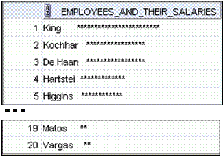

2. Напишите запрос для отображения первых восьми букв фамилий сотрудников и их заработной платы в виде гистограммы, состоящей из звездочек. Каждая звездочка означает 1000$. Строки должны быть отсортированы по заработной плате в убывающем порядке. Результат должен быть выведен одним столбцом, озаглавленным как EMPLOYEES_AND_THEIR_SALARIES.

select e.last_name
, e.salary
, substr(e.last_name, 1, 8) || ' ' || lpad(' ', trunc(e.salary/1000)+1, '*') "sal"
from employees e
order by e.salary desc